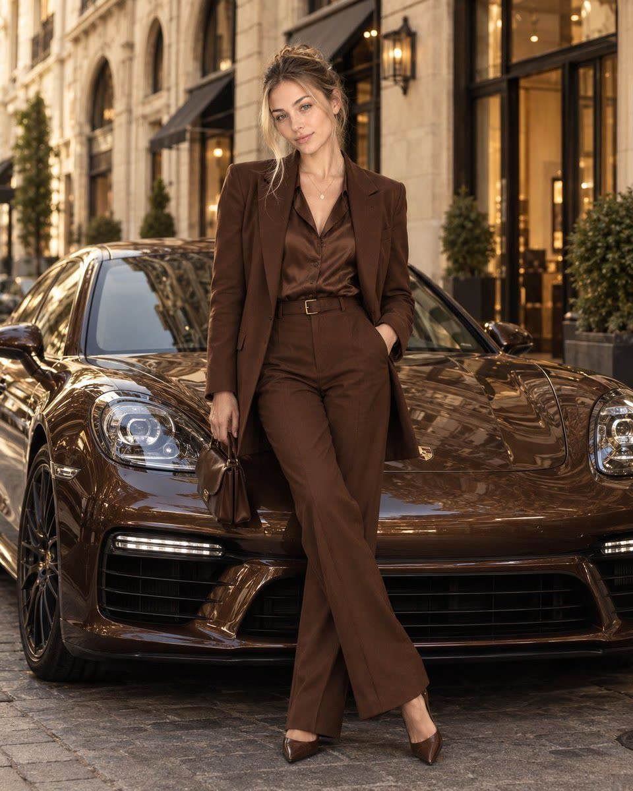

Luxury Fashion Editorial with Sports Sedan
WRD-005WardrobeNano Banana Proby AynelleOctober 5,

A prompt for generating a photorealistic luxury fashion editorial featuring an elegant woman and a sports car, optimized for Nano Banana Pro.
Prompt
Create a photorealistic luxury fashion editorial of an elegant young woman standing confidently in front of a glossy brown luxury sports sedan, parked on a sophisticated European-style city street. She wears a tailored chocolate-brown blazer, matching high-waisted trousers, a silky brown blouse, and pointed brown heels. Long softly wavy brown hair, natural flawless skin, subtle luxury makeup, confident expression. Warm beige historic architecture with tall arched windows and boutique entrance in the background, cinematic golden-hour lighting, shallow depth of field, realistic reflections on the car, premium fashion campaign aesthetic, full-body composition, vertical 4:5, ultra-detailed, realistic photography, no text, no watermark, no distorted hands or face.
Tags: fashion, 9:16 vertical